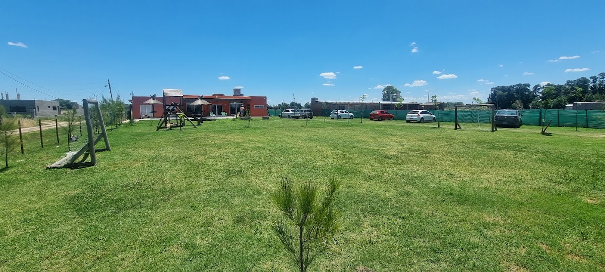
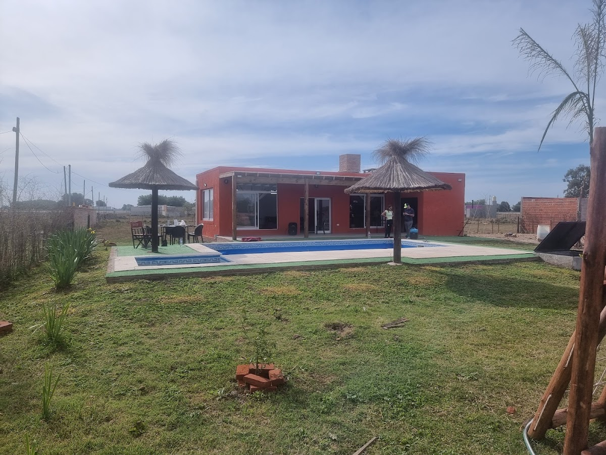
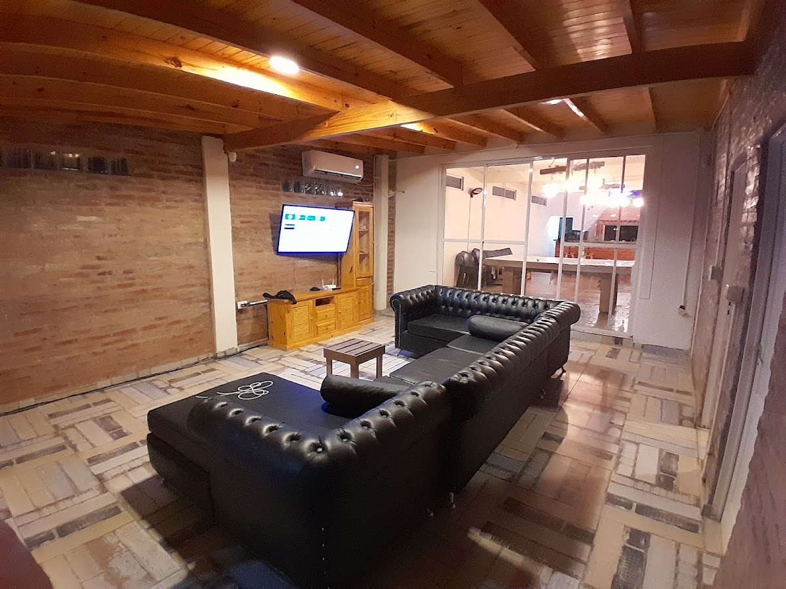
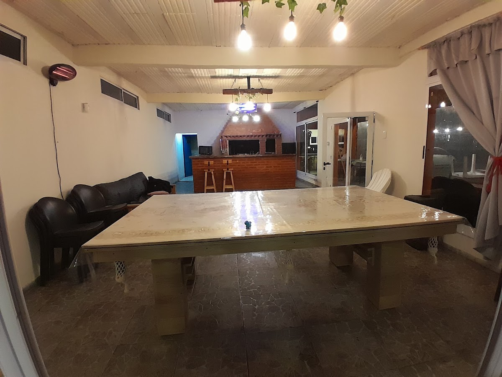

Quinta · Cañuelas, Buenos Aires
Lo de Pablo, todo el año.
Pileta, parque, living y salón en Cañuelas para fines de semana, eventos y escapadas, en cualquier época del año.
- Atención
- 8 a 20 h
- Días
- Todos
- Zona
- Cañuelas
Afuera
Pileta y parque


- PiletaCon sombrillas de paja, frente a la galería de la casa.
- ParqueAmplio, con arcos de fútbol y juegos para los chicos.
- GaleríaTechada y con guirnaldas de luces, para seguir afuera cuando cae el sol.
Adentro
Living y salón


- LivingSillones, tele y aire acondicionado.
- SalónMesa grande, barra de ladrillo y calefactor, para comer todos juntos.
Fotos y horario de la ficha de Google de la quinta. Capacidad, valores y servicios: los cargamos con tus datos.
No solo en temporada
Se alquila todo el año
Verano, otoño o invierno: la quinta está para cualquier fin de semana del año.
- Fines de semanaUn sábado o un domingo de pileta y parque con tu gente.
- EventosCumpleaños, reuniones y festejos, con el salón y el parque.
- EscapadasSalir de la ciudad y desconectar en Cañuelas.
- Días fríosLiving y salón techados para juntarse también en invierno.
Cómo reservar
- Nos escribís por WhatsAppNos contás qué fecha querés y para cuántas personas.
- Te confirmamos la fechaTe decimos si está libre y cuál es el valor.
- Mandás la señaCon el comprobante, la fecha queda reservada.
Los pasos de muestra se ajustan a como reservás vos. La disponibilidad se consulta siempre por WhatsApp.
Consultá tu fecha, en cualquier época del año
Fin de semana, evento o escapada: escribinos por WhatsApp y te decimos si la fecha está libre.
Escribir por WhatsAppBotón de muestra: en la web real abre tu WhatsApp para consultar la fecha.